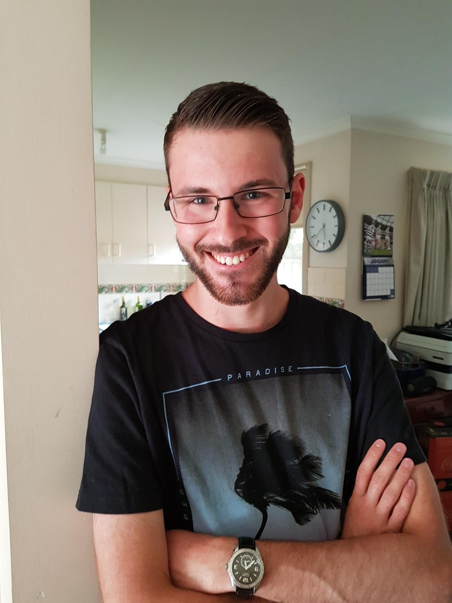
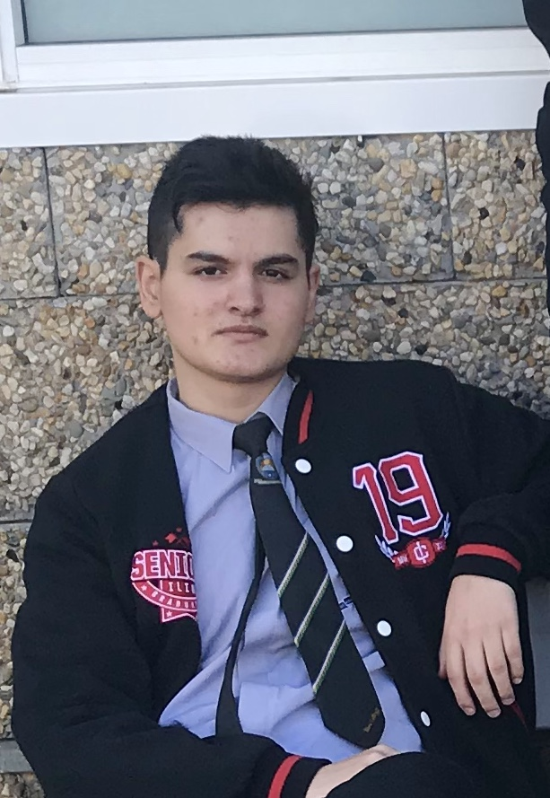
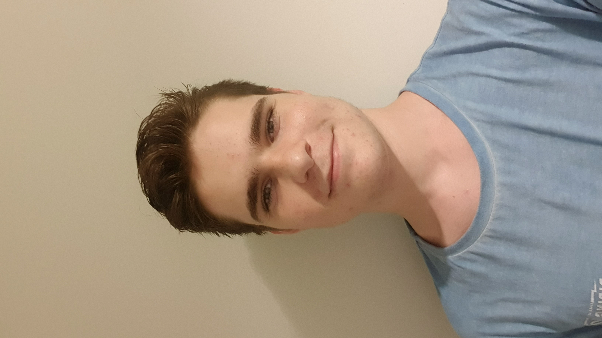
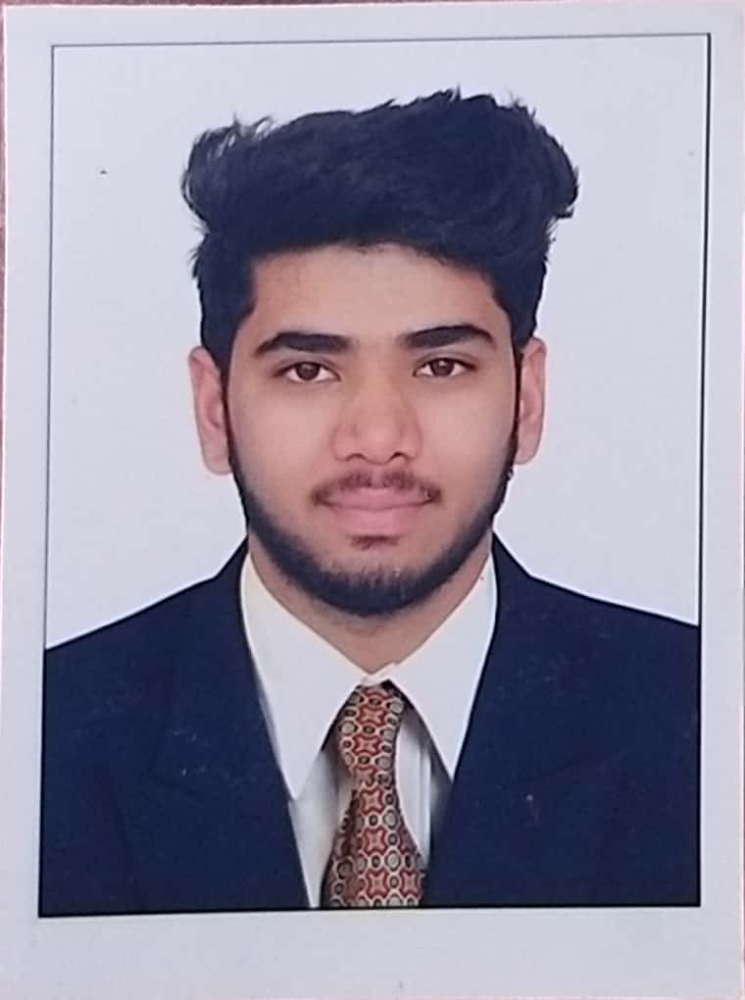

Personal Information
Team Handlotion
Our group has 6 members - in alphabetical order by first name, we are Anthony Tran, Evan Hanlon, Matthew Falzon, Mehmet Cansev, Nicholas Leppan, and Rahul Bharathbai Suthar.
Evan is the team leader.
Personal information for Anthony (Individual assignment):
- Name: Anthony Tran
- Student No: s3780694
- Background: Australian/Vietnamese
- Other languages spoken: Vietnamese
- Hobbies: Video games
- IT Interest: Game Design
- IT Experience: Previously studied Business (Information Systems), transferred to IT due to lack of interest.
- Myers-Briggs personality type: Entertainer ESFP-T
- Learning style proficiency: Tactile 60%, auditory 20%, visual 20%
- Big Five personality test: Openess: 46%, Conscientiousness: 52%, Extraversion: 44%, Agreeableness: 75%, Neuroticism: 62.5%
Personal information for Evan (Individual assignment):

- Name: Evan Hanlon
- Student No: s3855923
- Background: Almost entirely British Isles-based (Irish, Scottish, English)
- Hobbies: Video games
- IT Interest: Software Testing
- IT Experience: Software Development in year 12, first year programming units at Deakin University in 2017, little since
- Myers-Briggs personality type: Adventurer ISFP-A
- Learning style proficiency: Tactile 60%, auditory 20%, visual 20%
- Big Five personality test: 60% Openness, 56% Conscientiousness, 33% Extraversion, 71% Agreeableness, 56% Neuroticism
Personal information for Matthew (Individual assignment):

- Name: Matthew Falzon
- Student No: s3855923
- Background: Australian-born, Maltese and Greek heritage
- Hobbies: Listening to music, watching sports
- IT Interest: Networking and Security
- IT Experience: Basic HTML and JAVA and used XML sheets before
- Myers-Briggs personality type: Entertainer - ESFP-A
- Learning style proficiency: 25%- Auditory, 35% Visual, 40% Tactile
- Big Five personality test: 44% Openess, 65% Conscientiousness, 52% Extraversion, 75% Agreeableness, 40% Neuroticism
Personal information for Mehmet (Individual assignment):

- Name: Mehmet Cansev
- Student No: s3849512
- Background: Turkish
- Other languages spoken: Turkish
- Hobbies: Video games
- IT Interest: Gaming industry
- IT Experience: Minute experience, Learning
- Myers-Briggs personality type: Mediator - ENFP-T
- Learning style proficiency: Auditory 50%, visual 25%, tactile: 25%
- Big Five personality test:71% Openness, 50% Conscientiousness, 69% Extraversion, 50% Aggreableness, 33% Neuroticism
Personal information for Nicholas (Individual assignment):

- Name: Nicholas Leppan
- Student No: s3840050
- Background: South African
- Other languages spoken: Afrikaans
- Hobbies: Video games, puzzle solving
- IT Interest: Cybersecurity, Artificial Intelligence
- IT Experience: Adequate knowledge in Python, HTML, CSS and Java
- Myers-Briggs personality type: INFP-A [The Mediator]
- Learning style proficiency:40% Audio-40% Visual- 20% Tactile
- Personality test: 87.5% Openess, 31% Conscientiousness, 40% Extraversion, 65% Agreeableness, 42% Neuroticism
Personal information for Rahul (Individual assignment):

- Name: Rahul Bharathbai Suthar
- Student No: s3853915
- Background: I am from a Gujarati family in India.
- Other languages spoken: Gujarati, Hindi, English
- Hobbies: Photography, Photo Editing, cinematography, graphics design, and developing websites with PHP
- IT Interest:From the very start of my standard 10th subjects like programming and cyber security fascinated me and drew my
attention towards the field of Information Technology and and at that moment I decided that I would do my Diploma
in Computer Engineering. Then, I got inspired by my one of the friends studying in Australia to study abroad and far from home
which is what brought me to RMIT University to study my Bachelor in Information Technology. I would love to work as a web developer who
is able to manage databases and backend development, particularly in PHP scripting language.
- IT Experience:I have worked as an intern in a IT company called SILVERWING TECHNOLOGIES PVT. LTD.
as a lead back end developer for developing a Learning Management System according to the Indian education system.
Along with that I have also made many static and dynamic websites for my clients such as:
- Myers-Briggs personality type: According to my Myers-Briggs personality test report I am: Extroverted, Sensing, Thinking, Judging. ESTJ
- Learning style proficiency: Auditory-35%, Visual-45%, Tactice-20%
- Big Five personality test: 73% Openness, 67% Conscientiousness, 67% Extroversion, 67% Agreeableness, 65% Neuroticism